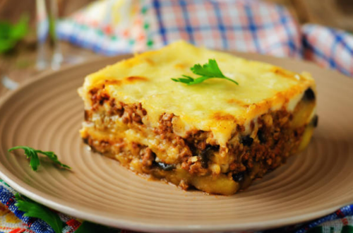
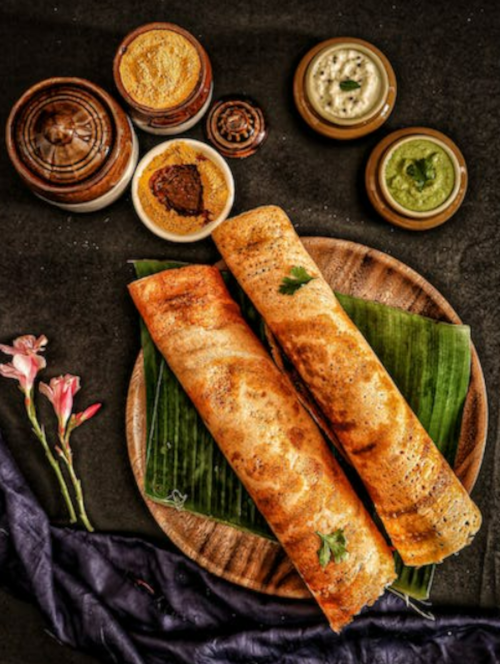
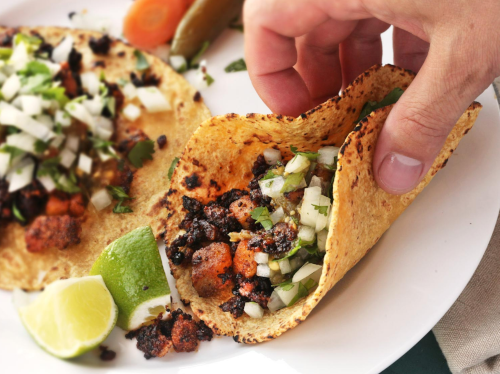
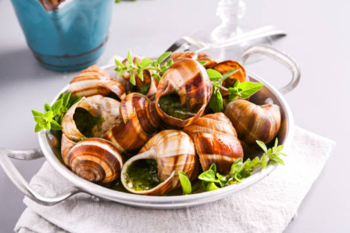
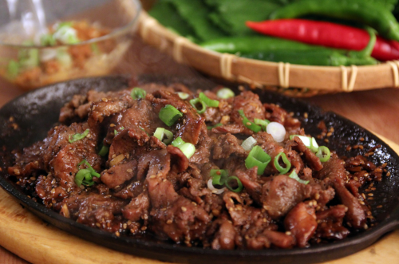

1. Moussaka - Grécia
A Moussaka é um prato típico mediterrâneo. Na Grécia, por exemplo, ele é extremamente popular.
Olhando de longe ele é muito parecido com uma lasanha, mas seu preparo é bem diferente. Geralmente a Moussaka é feita com molho de queijo bechamel, carne de cordeiro e berinjela.
2. Masala Dosa - ìndia
Este prato, tipicamente indiano, é parecido com uma panqueca, mas não se engane. A massa é feita de arroz e lentilhas e pode ter purê de batatas, cebolas fritas e chutney.
Se você for para a Índia vai se deparar várias vezes com esse prato, extremamente popular no país.
3. Tacos - México
O Taco mexicano é uma comida muito popular, tanto que já ganhou adaptações para vários países, inclusive os EUA e o Brasil.
Ele é feito de tortilhas à base de milho e recheado com carne, tomate, queijo e alface.
4. Escargot - França
Esse aperitivo tipicamente francês é conhecido por todo o mundo. Ele é feito com caracóis servidos na casca, cozidos com manteiga de alho e salsa.
O prato costuma ser bem caro, isso porque um escargot costuma levar de seis a oito meses para atingir 15g, que é o peso mínimo necessário para consumo.
Além disso, como esses bichinhos são muito frágeis eles são criados em um ambiente todo controlado e, mesmo assim, têm um índice de mortalidade de 12% a 15%.
5. Bulgogi - Coréia
O Bulgogi é um prato coreano, que traduzido significa carne de fogo. Isso já dá um sinal de que o gosto e o tempero serão bem fortes, certo? Na Coréia o Bulgogi é temperado com vinho, cebola, molho de soja, gergelim e vegetais.
É quase impossível visitar a Coréia e não se deparar com esse prato superpopular. Ele pode ser encontrado, inclusive, em redes de fast food coreanas.